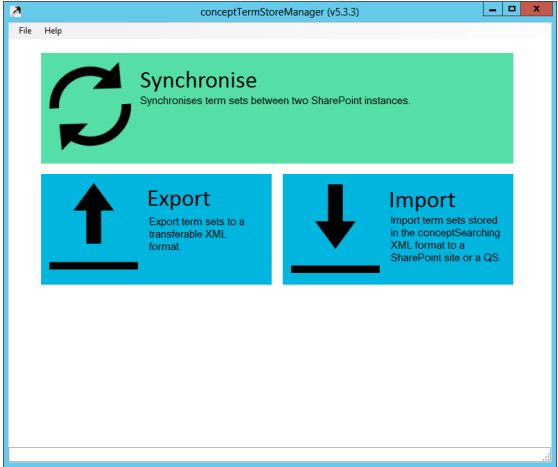
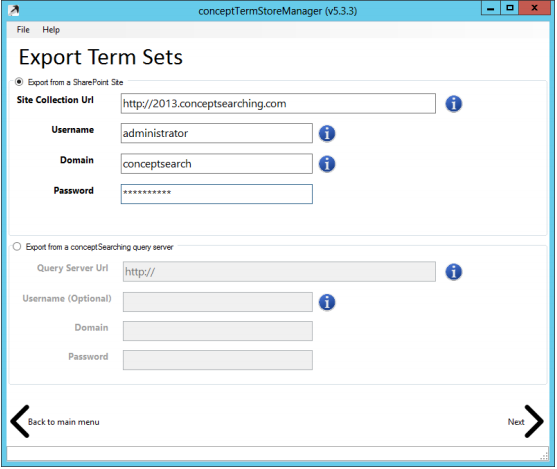
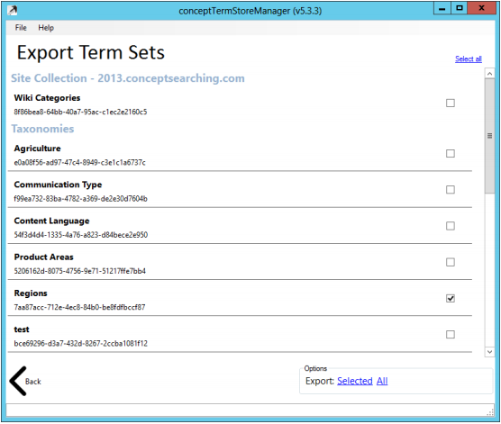

Export a term set structure to an XML file via the conceptTermStoreManager using the steps
listed in this article
The resulting XML file will contain the entire Term Set structure, including all custom properties, in the proprietary conceptSearching XML format. This file can be used to load the term set into another term store using the Import facility.
- Navigate to C:\inetpub\wwwroot\conceptQS\bin\conceptTermStoreManager.exe
-
Run the conceptTermStoreManager.exe and observe the following screen
- 
- Click the "Export" box to export a term set structure to an XML file
-
On the Export Term Sets page, enter the details of the site collection where the
Term Store can be accessed using the credentials supplied
- 
- Click Next
-
Select the term sets you wish to export by using the checkboxes on the right-hand side
- 
- Click either the Selected button to export the checked items or the All button to export all term sets found in the term store
- Name and save the XML file When the Save As window appears
The resulting XML file will contain the entire Term Set structure, including all custom properties, in the proprietary conceptSearching XML format. This file can be used to load the term set into another term store using the Import facility.